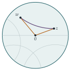

STEP III 2013, Question 6
Read the question before you go on. It is in the STEP Support Programme’s question database: step.maths.org/questions/13-s3-q6
The hook
At first sight this is an exercise in manipulating moduli and conjugates, ending in a strange-looking inequality. Why would anyone care about \(\frac{|z - w|}{|1 - zw^*|}\)?
Because it is a distance. Not the ordinary distance between \(z\) and \(w\), but the distance in a different geometry, one in which the unit disc is an entire infinite universe, straight lines are circular arcs, and the angles of a triangle add up to less than \(180^\circ\). This is hyperbolic geometry, discovered in the nineteenth century after two thousand years of attempts to prove Euclid’s parallel postulate, and the inequality in this question turns out to be its triangle inequality, in disguise. Even more surprisingly, the right-hand side is the formula for adding velocities in special relativity, which we met in Section 3.8.
Before you start
How does \(|z - w| \leq |z| + |w|\) follow from a diagram? (Think of \(z\) and \(-w\) as vectors.)
\(z - w = z + (-w)\). Draw \(z\) as an arrow from the origin, then \(-w\) as an arrow from the tip of \(z\). The arrow from the origin to the final point is \(z - w\), and the three arrows form a triangle with sides \(|z|\), \(|w|\) and \(|z - w|\). One side of a triangle is at most the sum of the other two.
Also recall that \(|a|^2 = aa^*\) for any complex number \(a\). That converts every modulus in the question into algebra.
Working it through
Stage 1 Expanding the moduli
Expand \(|z - w|^2 = (z - w)(z^* - w^*)\). Compare with \((|z| + |w|)^2\).
\(|z - w|^2 = zz^* - zw^* - z^*w + ww^* = |z|^2 + |w|^2 - zw^* - z^*w\). Meanwhile \((|z| + |w|)^2 - E = |z|^2 + 2|z||w| + |w|^2 - zw^* - z^*w - 2|zw|\), and since \(|z||w| = |zw|\) this is the same.■
\(E = (zw^*) + (zw^*)^* + 2|zw| = 2\,\mathrm{Re}(zw^*) + 2|zw|\), which is real. And \(E = (|z| + |w|)^2 - |z - w|^2 \geq 0\) by the triangle inequality.■
Stage 2 The second identity
\(|1 - zw^*|^2 = (1 - zw^*)(1 - z^*w) = 1 - zw^* - z^*w + |z|^2|w|^2\), while \((1 + |zw|)^2 - E = 1 + 2|zw| + |zw|^2 - zw^* - z^*w - 2|zw|\), which is the same.■
Stage 3 The inequality
Write \(A = (|z| + |w|)^2\) and \(B = (1 + |zw|)^2\). The inequality, squared, says \(\frac{A - E}{B - E} \leq \frac AB\). When is that true?
Both sides of the required inequality are non-negative, so it is equivalent to its square, \(\frac{A - E}{B - E} \leq \frac{A}{B}\). Assuming \(B - E = |1 - zw^*|^2 > 0\), multiply out: \[(A - E)B \leq A(B - E) \iff -EB \leq -EA \iff E(B - A) \geq 0.\] Since \(E \geq 0\), this holds whenever \(B \geq A\), that is, \(1 + |zw| \geq |z| + |w|\).
Show that \(1 + |z||w| - |z| - |w|\) factorises. When is it non-negative?
\(1 + |z||w| - |z| - |w| = (1 - |z|)(1 - |w|)\). If \(|z| > 1\) and \(|w| > 1\), both factors are negative and the product is positive. So \(B \geq A\) and the inequality holds.■
If instead \(|z| < 1\) and \(|w| < 1\), both factors are positive, the product is again positive, and the same argument works: yes, the inequality holds in this case too. (In both cases \(|zw^*| \neq 1\), so \(1 - zw^* \neq 0\) and the left-hand side is defined.) It is the mixed case, one inside the unit circle and one outside, where it can fail.
Looking back
\(|a|^2 = aa^*\). Every identity came from expanding products of conjugates. This is the standard way to handle moduli algebraically.
Reduce to the sign of one quantity. After squaring and cross-multiplying, the whole inequality depended on the sign of \((1 - |z|)(1 - |w|)\).
Check other cases. The final question asked about \(|z|, |w| < 1\); the same factorisation answered it immediately.
What’s really going on
For two thousand years mathematicians tried to prove Euclid’s fifth postulate (through a point not on a line, there is exactly one parallel to the line) from his other axioms. In the 1820s and 1830s Nikolai Lobachevsky, János Bolyai and (privately) Gauss realised that it cannot be done: there is a perfectly consistent geometry in which there are infinitely many parallels. In 1882 Henri Poincaré found a beautiful model of it inside the unit disc. Points are points of the open disc; “straight lines” are diameters and circular arcs that meet the boundary circle at right angles; and the distance between \(z\) and \(w\) is \[d(z, w) = 2\tanh^{-1}\rho(z, w), \qquad\text{where}\qquad \rho(z, w) = \frac{|z - w|}{|1 - zw^*|}.\] As a point approaches the boundary circle, its distance from the centre tends to infinity: the disc is a whole infinite plane, seen through a distorting lens.

The triangle inequality in disguise
Here is what the question proved, for \(|z|, |w| < 1\). Write \(|z| = \tanh a\) and \(|w| = \tanh b\), so that the hyperbolic distances from \(0\) to \(z\) and \(w\) are \(2a\) and \(2b\). Then by the addition formula for \(\tanh\) from Section 3.8, \[\frac{|z| + |w|}{1 + |zw|} = \frac{\tanh a + \tanh b}{1 + \tanh a\tanh b} = \tanh(a + b).\] So the inequality says \(\tanh\bigl(\frac12 d(z, w)\bigr) \leq \tanh(a + b)\), that is, \[d(z, w) \leq 2a + 2b = d(z, 0) + d(0, w).\] This is the triangle inequality for hyperbolic distance (Figure 5.8.1). The relativistic velocity-addition formula and hyperbolic geometry are secretly the same thing: the set of possible velocities in special relativity, with the right notion of distance, is a hyperbolic space. We return to this in Section 7.6.
Symmetries of the disc
Why is \(\rho\) the right quantity? The maps \(z \mapsto \dfrac{z - a}{1 - a^*z}\), for \(|a| < 1\), send the unit disc to itself, preserve the hyperbolic distance, and move \(a\) to the centre. They are the hyperbolic analogues of translations, and \(\rho(z, w)\) is exactly \(|{\text{image of } z}|\) when \(w\) is moved to the centre. These Möbius transformations are a central topic in complex analysis. M. C. Escher’s Circle Limit woodcuts, inspired by a diagram of the mathematician H. S. M. Coxeter, show tilings of the Poincaré disc by congruent fish and angels, which shrink towards the edge because hyperbolic distances blow up there.
The thinking skill
When an algebraic expression keeps appearing, ask whether it has a meaning: a distance, an angle, a probability, a symmetry.
Here a strange ratio of moduli turned out to be a distance in another geometry, and a strange inequality turned out to be its triangle inequality. Recognising the meaning explains why the result is true and where it leads.
Try this next
A numerical check. Take \(z = \frac12\) and \(w = -\frac12\). Compute both sides of the inequality. Then compute the hyperbolic distances \(d(z, 0)\), \(d(0, w)\) and \(d(z, w)\) and check the triangle inequality is an equality here. Why?
The mixed case. Find \(z\), \(w\) with \(|z| < 1 < |w|\) for which the inequality fails.
An isometry. Let \(f(z) = \dfrac{z - a}{1 - a^*z}\) with \(|a| < 1\). Show that \(|f(z)| = 1\) whenever \(|z| = 1\), and that \(f(a) = 0\). Show that \(\rho(f(z), f(w)) = \rho(z, w)\).
Infinity is near. Show that the hyperbolic distance from \(0\) to \(r\) (with \(0 < r < 1\)) is \(\ln\frac{1+r}{1-r}\), and that it tends to infinity as \(r \to 1\). How close to the boundary must a point be to be hyperbolic distance \(10\) from the centre?
Further reading
Caroline Series, “Hyperbolic geometry” lecture notes (University of Warwick, freely available). A clear first course, starting from the Poincaré disc.
Jeremy Gray, Ideas of Space (Oxford University Press). The history of non-Euclidean geometry from Euclid to Einstein.
Tristan Needham, Visual Complex Analysis (Oxford University Press). Chapter 6 covers non-Euclidean geometry and Möbius transformations, with beautiful pictures.